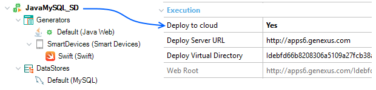

My first iOS application
This document is a step by step explanation of how to create a simple native iOS application with GeneXus.
In this sample, the application connects to REST services in Java that persists data on MySQL. If you are using another generator (e.g. .NET) or DBMS the steps are the same but the prerequisites change.
Before starting with the tutorial please check that the prerequisites are correctly installed. See Apple platform article for more information.
Step 1
Open GeneXus and create a New - Knowledge Base. Select Ruby as the Prototyping Environment.
Step 2
Create a Customer and Company Transaction with the following structure:

Please note that predefined domains were used for certain attributes and, in both cases, be sure to set as True the Autonumber property of each identifier attribute (i.e.: positioned on the CustomerId field, press F4 to see its properties, and change the Autonumber property. Do the same for the CountryId attribute).
Step 3
Apply Work With for Smart Devices pattern to both transactions (e.g.: open each transaction, click on Patterns selector, choose Work With for Smart Devices tab, and check the checkbox as shown below. Then, save):
From the Toolbox, drag & drop the control Attribute/variable in order to insert attributes you want to see on the Customer list screen (e.g.: CustomerEmail):

To remove the attribute label, change the Label position property, to "None" value:

Step 4
Create a Menu for Smart Devices object called Menu.
This object is like a menu; you can use it to call the Work With objects created in the previous Steps. To do it: right click in the Items option to add actions to the Dashboard. You must select the WorkWithDevices<TransactionName> objects in the Select Object dialog:

When you select a WorkWithDevices<TransactionName> object, the Event associated with this action will be generated automatically:
Event 'WorkWithDevicesCustomer'
WorkWithDevicesCustomer.Customer.List()
EndEvent
Event 'WorkWithDevicesCompany'
WorkWithDevicesCompany.Company.List()
EndEvent
Step 5
Edit the SmartDevices Generator Preferences. Set the following properties:
| Generate Android property | False |
| Generate iOS property | True |
| Main Platform property | iOS |
| Execution Type property | Knowledge Base Navigator (Device) Now, download and install GeneXus KBN into your iOS device, which is a kind of browser that lets you execute your GeneXus application. |
| Execution Device property | You have to choose in which of your registered devices the prototyping is going to be done. If you have not logged in yet, you will be asked to do it. After that, the following window opens, so you can choose the device: |
Step 6
Press F5 to build the application. At the first time, you do this GeneXus needs to know the database connection information.
If your computer and the Device are not in the same network (viewing each other), and/or you prefer a simpler solution for wireless prototyping, you could deploy to cloud (we recommend that option for your first develop). For that, press Cancel on the window, and go to Preferences, setting Yes for the "Deploy to cloud" property, as shown below:

The following output is shown, as well as the Impact Analysis report, indicating the tables that must be created on the database. Click on Create button in order to actually create them.
After executing the web application on your computer, a Notification will appear on your device (in this case iPad), that will automatically take you to the KBN. On this screen, you can see the URL (or you can introduce a URL shortcut(*1)) where it is deployed and underneath you have to select which application you want to execute. Then, enter to your application.
Enjoy!
Notes
(*1) Available since GeneXus Evolution 3 Upgrade 7
Download the XPZ
To import GeneXus objects used in this demo, right on your KB, download the following file: My First Smart Device Application.
See also
For more information check Apple - FAQ and Common Issues